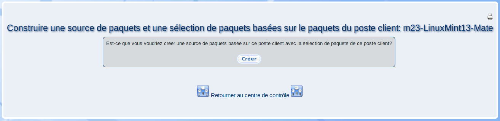

Avec ce dialogue, vous pouvez créer une source de paquets contenant tous les paquets qui sont installés sur le poste client. De plus, il sera créée une sélection de paquets contenant les noms de paquets correspondants.

La source de paquets et la sélection de paquets seront nommés d'après le schéma suivant: ''Build_from_nom_du_poste_client''.
root
2019-06-03